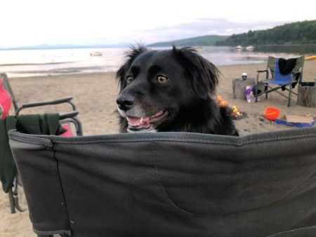
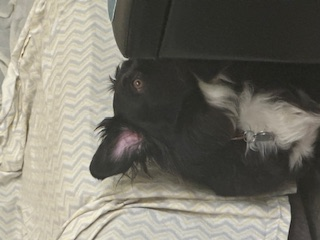
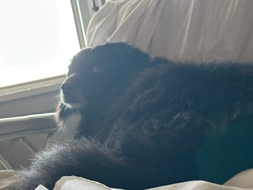
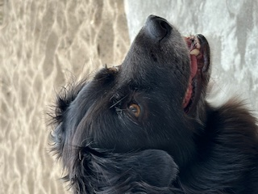
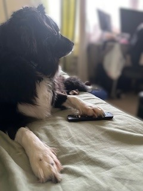

About me
My name is Lucy Lulu. I am a 5 year old border collie, beagle, and aussie mix. My favorite foods are chicken, peanut butter, bacon, and snack sticks. I also like lamb, beans, and sometimes broccoli. I was born in Kentucky, fostered as a young pup, and adopted to my current family. My favorite things to do are eat, sleep, bark at animals in the backyard, play, and bark at loud noises. I like to go for walks, but I usually don't travel very far. My favorite person to be with is my sister. My favorite toys are a chicken and a lamb. My favorite chewies are a bacon chew and a green one. I am afraid of bigger dogs, vacuums, sudden noises, falling objects, and gates. I am also very friendly and love meeting new people and dogs. Some even say I am very moody.

Day in my life
A typical day in my life consists of all the essentials, eat, sleep, bark, and play. I wake up to the sound of mom and dad getting ready to leave for some mysterious place. One of them will offer to let me go outside, but usually I don’t want to. Then, I fall back asleep for a few more hours. Usually, I am sleeping on and off for most of the day. I dream about vacations, family, chicken, other foods, and having fun. I love sleeping on the couch or in mom’s orange chair, it’s very comfortable.When I finally wake up, I’m usually sent outside to relieve myself. I like to walk around the backyard looking for new and interesting things. I watch for squirrels, rabbits, groundhogs, and the occasional deer. I love to chase them, but I can never catch them because of the fence. Birds are not that interesting, and if bugs fly by me, I try to bite them. Usually, I spend as long as possible outside, unless the family is preparing for dinner. Once I’m back inside, I am fed the same crunchy food. My family always tells me no when I want snack sticks before dinner, I don't know why. It’s good, but not overly exciting. What is exciting is when mom gives me some of her food, especially chicken. Mom almost always shares her food with me. After I eat, I like to sit by the door and look outside to the backyard or play. When that gets boring, I'll move to the living room and sit on the couch. My family will look at this mysterious thing called a TV, and sometimes I do to. The rest of the day I relax and go outside again to bark at animals or talk to the other neighborhood dogs.
Gallery of my best pics



